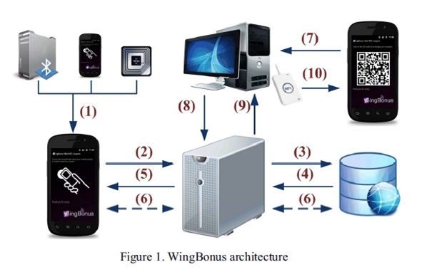

สถาปัตยกรรมของระบบ
ปัจจุบันการเสนอขายต่างๆมักจะจำกัดส่วนลดและบัตรกำนันสำหรับบริษัทคู่ค้า (ร้านค้าต่างๆ) คูปองมีหลายชนิดที่ได้รับการสนับสนุนโดย Wingbonus เช่น ชนิดที่คล้ายกับ “season tickets” (เป็นตั๋วที่ให้สิทธิพิเศษในช่วงระยะเวลาที่กำหนด) ผู้ใช้สามารถรับแพคเกจของสินค้าหรือการบริการด้วยการลดค่าใช้จ่ายของลูกค้า ตัวอย่างเช่น ผู้ใช้สามารถซื้อ 10 บัตรกำนันสำหรับการกินอาหารค่ำที่ร้านอาหารและจ่ายเพียง 8 จากทั้งหมด ซึ่งผู้ใช้จะมีการแลกคูปองของเขาผ่าน NFC โดยใช้แอพพลิเคชั่นWingBonusจนกระทั่งแลกถึง 10 WingBonus สามารถนำไปใช้เพื่อเป็นบัตร loyalty point card ซึ่งเรียกบัตรเหล่านี้ว่า “chits”การใช้บัตรนี้ผู้ใช้สามารถได้รับคะแนน ณ สถานที่ที่กำหนดทุกๆเวลาที่เขาใช้บริการของร้านค้า (trade partner) เมื่อผู้ใช้ได้คะแนนถึงจำนวนหนึ่งเขาสามารถแลกเปลี่ยนคะแนนนั้นเพื่อรับสินค้าและบริการในร้านค้าเดี่ยวกัน ซึ่งทางร้านต้องการให้คะแนนเหล่านั้นเป็นการเสร้างความจงรักภักดีของผู้ใช้ (เพื่อให้ลูกค้ากลับมาใช้บริการซ้ำ) WingBonusทำให้รายงานสมบูรณ์พอที่จะสนับสนุนกระบวนการทั้งหมดของการใช้ระบบแลกเปลี่ยนคูปองซึ่งการแลกเปลี่ยนสามารถทำได้ด้วยระบบอิเล็กทรอนิกส์ผ่านการเชื่อมต่ออินเทอร์เน็ตและเทคโนโลยี NFC ซึ่งจะเห็นได้จากภาพดังต่อไปนี้
รูปที่ 1.1 สถาปัตยกรรม Wingbonus
สถาปัตยกรรมเสนอWingBonusสำหรับช่วยจัดหาคูปองทุกชนิดให้กับผู้ใช้และการกระทำนั้นสามารถใช้ได้หลายๆทางผู้ใช้สามารถได้รับคูปองผ่านทาง Smart Posterซึ่งใช้เทคโนโลยี NFCหรือผ่านทาง Bluetooth server หรือจะมาจากการโอนถ่ายจากผู้ใช้คนอื่น (รูปที่1.1, Step 1) Smart Poster จะประกอบด้วยข้อมูลที่จำเป็นทั้งหมดของคูปอง ตลอดจน Bluetooth server อาจจะส่งไปยัง Smart Poster ดังนั้นข้อมูลที่รวบรวมจาก Tag หรือ Bluetooth server จะส่งไปยัง server (Step 2) และจะมีการตรวจสอบความถูกต้องของคูปอง จากนั้น server จะเรียกข้อมูลของคูปองจากฐานข้อมูล (Step 3 and 4) และส่งกลับไปยังmobile application (Step 5) ในลักษณะที่คล้ายกัน ผู้ใช้สามารถถ่ายโอนหรือแนะนำคูปองระหว่างพวกเขาผ่าน NFC เช่น ใช้Smart Poster สิ่งนี้จะสอดคล้องกับการถ่ายโอนข้อมูลทั้งหมดของคูปองหรือจะมาร์คไว้เพื่อจะมารับในภายหลังจากเซิร์ฟเวอร์ อีกทางเลือกหนึ่งคือ คูปองสามารถดาวน์โหลดโดยตรงจากแอพพลิเคชั่น WngBonus โดยใช้ขั้นตอนที่เหมือนกันและเลือกคูปองที่ต้องการ (รูปที่ 1.1, Step 6) อย่างไรก็ตาม WngBonus มีวิธีการที่ปลอดภัยในการแลกคูปองโดย NFC ที่ร้านค้า ซึ่งการติดต่อสื่อสารเป็นแบบ peer-to-peer ดังนั้นข้อมูลคูปองจะถูกส่งไปยังเครื่องอ่าน NFC (รูปที่1.1, Step 7) และจากนั้นเครื่องคอมพิวเตอร์ที่เชื่อมต่อกับเครื่องอ่านจะตรวจสอบข้อมูลนี้กับเซิร์ฟเวอร์ WingBonus (รูปที่ 1.1, Steps 8 and 9) สุดท้าย เครื่องคอมพิวเตอร์ที่สถานประกอบการ (ร้านค้า)จะแสดงผลผ่าน NFCในสมาร์ทโฟนของผู้ใช้แสดงให้เห็นว่าการดำเนินการเสร็จสมบูรณ์แล้ว(Step 10)